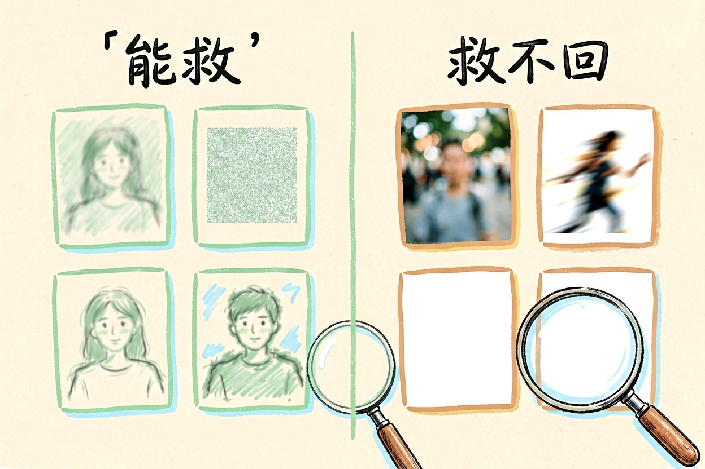
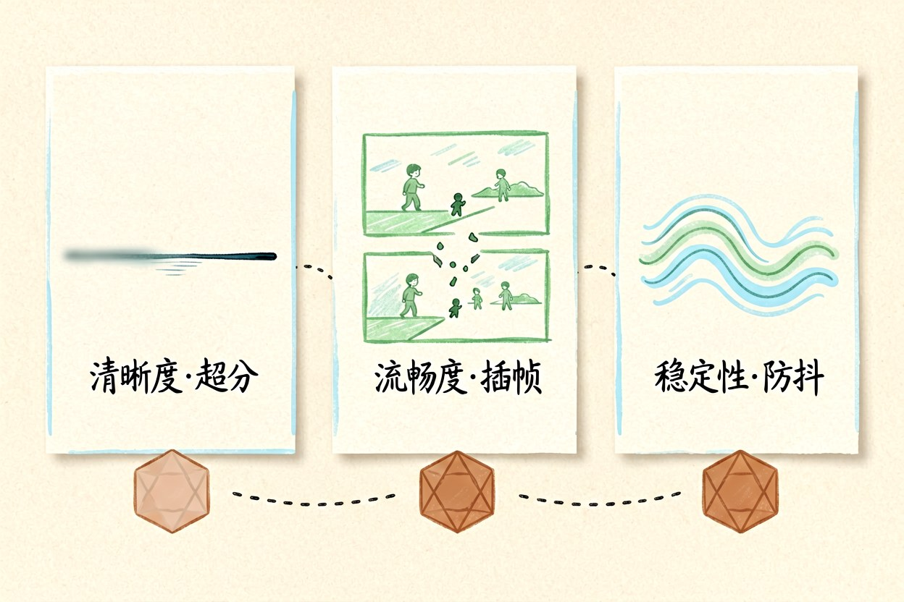
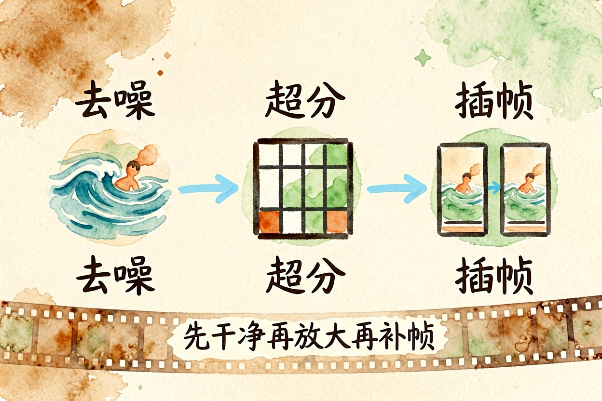

AI 视频修复该怎么做：超分与插帧的先后顺序
手机拍的老素材能不能变清晰，取决于原始画面里还留着多少信息，而不取决于模型有多新。
AI视频修复最容易被误解的地方，是把它当成万能放大镜。它擅长把已有的信息整理得更清楚，但不会凭空补出没拍到的东西。先判断素材还剩下多少可用信息，再决定值不值得花时间处理。
AI视频修复能救什么不能救什么

能救的是分辨率不足、压缩噪点、边缘发糊、轻微抖动这几类问题。救不回的是严重失焦、运动拖影、曝光过度到没有细节，以及本来就拍不到的部分。判断方法很简单：把一帧放大到百分之三百，如果还能看出物体轮廓，就有救；如果只剩一片色块，处理完也只是把色块磨得更平滑。花十分钟做这个判断，比处理两小时再发现白干划算。
二、先把损伤分成三类

第一类是清晰度问题，靠超分解决。第二类是流畅度问题，画面顿、动作一跳一跳，靠插帧解决。第三类是稳定性问题，整幅画面在抖，靠防抖处理解决。三类混在一起时会互相干扰，比如先插帧再超分，插出来的中间帧会把噪点也放大一遍。分清楚再动手，成功率高一截。一次只处理一类问题，是基本的纪律。别混着来。
三、超分与插帧的先后顺序

常规顺序是先处理噪点，再做超分，最后插帧。原因是超分模型对干净画面的表现明显更好，而插帧最怕输入画面里全是噪点，它会把噪点当成细节去追踪。如果一定要插帧，先把帧率翻倍到两倍即可，不要一次冲到六十帧，中间帧生成得越多，伪影越明显。中间结果都单独留档，方便随时回退。
#三步分开跑，中间结果留档，出问题只重跑一步
ffmpeg -i in.mp4 -vf "hqdn3d=4:3:6:4.5" -c:a copy step1.mp4
ffmpeg -i step1.mp4 -vf "scale=iw*2:ih*2:flags=lanczos" -c:a copy step2.mp4四、参数怎么设才不假
超分强度拉满会让画面变成塑料质感，皮肤失去纹理，布料变得像涂抹过。多数素材的合适区间在中等强度，处理完放大看能不能看到毛孔或织纹，看不到就是过了。插帧同理，强度高会把快速动作糊成一团，运动场景宁可保守一点。参数没有通用最优值，只有针对这批素材的合适值。找到一组满意的参数就存成预设，下次直接复用。
五、处理前后的验收
抽三个时间点：开头、中间、结尾，各截一帧同位置放大对比。要看的是结构有没有变、人脸有没有换人、文字有没有糊。再完整看一遍动态效果，重点盯快速平移和人物转身的片段。有条件的话导出后在同一台设备上播一次，避免只在预览窗口里看。字幕和片头这类带文字的素材，处理完要逐字核对一遍。
AI视频修复说到底是个判断题，不是技术题。别拿修复当补拍，拍的时候把参数设对，比事后修十遍都值。也别在一条素材上反复叠加处理，每多过一遍模型，画面就多损一分。
本文信息核对于 2026-09-14。AI 产品的价格、免费额度与功能变动频繁，实际以各工具官网当前说明为准。